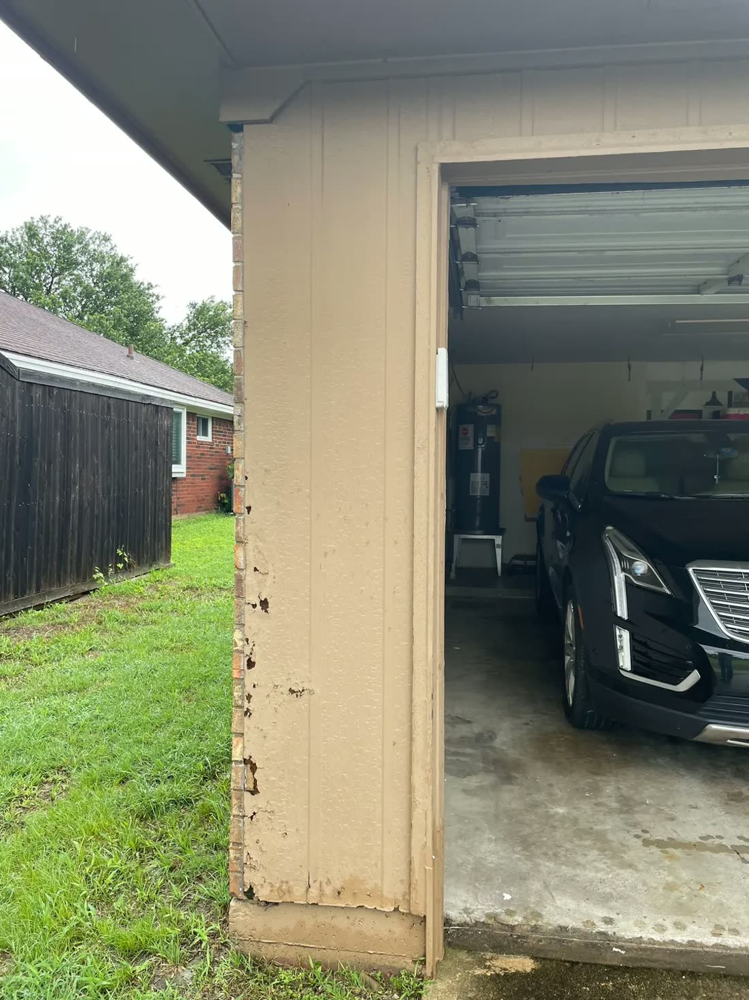

Free has been a dirty word in roofing since the first storm chaser rolled through. A free roof inspection in Plano TX should mean exactly one thing: we climb up, we look, we show you photos of what we find, and we leave you with a straight answer. We are Jackson Roofing, a family business on North Texas roofs since 2000, and that is the whole job.
Book a free, no obligation roof inspection. No sales pitch on a ladder, no pressure to sign.
What does a free roof inspection in Plano include?
We check the parts of the roof that fail first, then hand you the photos. That means the shingles, the flashing around chimneys and vents, the valleys, the ridge caps, and the spots where water likes to sneak in.

A real inspection is not a thirty-second glance from the driveway. We get up top, walk the roof where it is safe to, and look at the places that actually leak: worn or lifted flashing, cracked ridge caps, bald patches where a shingle has shed its grit, and any soft decking underneath. Then we come down and show you what we saw on a phone or a printout, so you are not taking our word for anything.
- Shingles: missing, cracked, curling, or worn thin
- Flashing around chimneys, vents, and valleys
- Ridge caps along the peak
- Signs of a leak: attic stains, soft spots, daylight through the boards
- Gutters and the grit collecting in them
Is the inspection really free, with no catch?
Yes. The inspection and the estimate are free, and there is no obligation to hire us afterward. About half our inspections end with us saying the roof is fine. That is a terrible sales strategy, and we do it anyway.
If somebody knocks and already knows your roof is totaled before they have seen it, that is a heck of a magic trick. We do the opposite. We drive out, climb up, take the photos, and a lot of the time hand you the least profitable sentence in roofing: your roof is fine, see you in a couple of years.
When should I get my Plano roof inspected?
After any hard storm, when you are buying or selling a home, and once every couple of years for an aging roof. Those are the moments when a free look pays for itself.
North Texas earns the inspections. Our summers bake shingles for months, our springs bring hail, and both go after the weak spots first. A roof that looks fine from the street can be cooking from the inside in a 140 degree attic. If a storm just rolled through Plano or Collin County, a quick look now beats a soaked ceiling after the next rain.
How long does a roof inspection take?
Most take under an hour. A straightforward single-story roof goes quicker, a large or steep roof takes a bit longer, and an active leak we trace to its source can add time. We do not rush it, because the point is to catch the small problems before they turn into big ones.
Which North Texas cities do you inspect for free?
We inspect roofs across North DFW. Our home base is Plano, and we cover the surrounding cities every week: Frisco, McKinney, Allen, Richardson, Garland, Wylie, and Murphy, plus Rockwall, Sachse, and the extended towns of Prosper, Celina, Little Elm, Lucas, Fairview, and Coppell.
Our free roof inspection in Plano TX page walks through the visit step by step. Tell us where you are when you get in touch. We already work your street.
What Jackson Roofing does about it
We are a family business that has inspected and repaired roofs across Plano and North DFW since 2000, with our own crews on every job. Every inspection is free, comes with photos, and ends with a straight answer and a written quote if you need work done. We do not pressure you to sign the same day, and when we do repairs we run a magnetic nail sweep across your yard and driveway at cleanup. If the inspection turns up a small fix, see our roof repair page. You can also read more about our family and crews, see the full range of what we do on our services overview, or get in touch here.
Frequently asked questions
Do you charge anything for a roof inspection in Plano?
No. The inspection and the estimate are both free, with no obligation to hire us.
Will you tell me if my roof does not need any work?
Yes, and often we do. About half our inspections end with us saying the roof is fine, and we say so plainly.
Do I need to be home for the inspection?
It helps so we can walk you through the photos afterward, but it is not required. We can send the photos and the findings if you cannot be there.
How soon can you come out after a storm?
We move active leaks to the front of the line. A big storm keeps every honest roofer busy for a week or two, so tell us when you call if water is already getting in.
Book your free, no-obligation inspection
Wondering if a storm did anything up there, or just want a straight answer before you buy a home? Book a free, no obligation roof inspection anywhere in Plano, Frisco, McKinney, Allen, or the surrounding North DFW towns. We show you photos of what we find and tell you the truth, even when the truth is that your roof is fine.